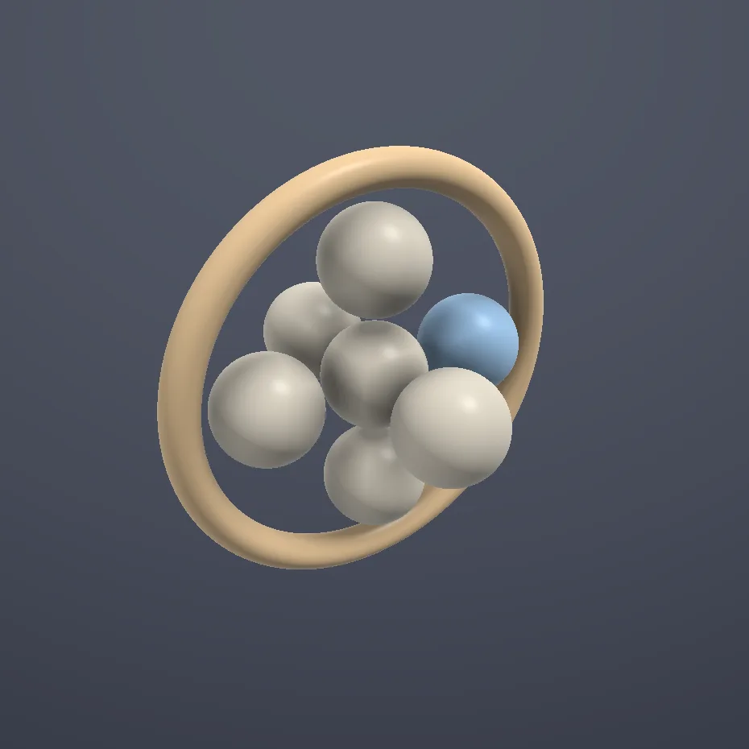
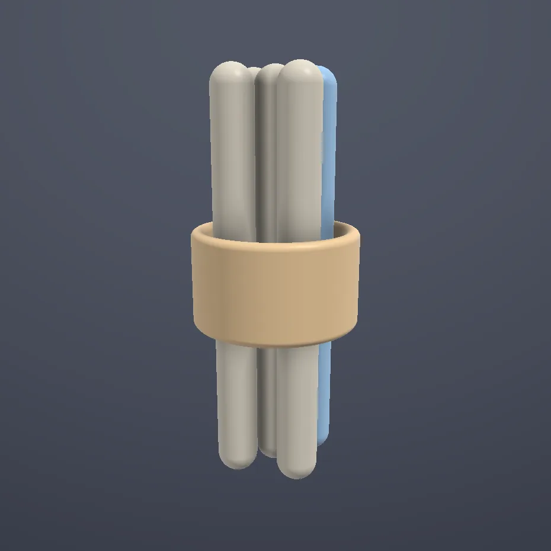
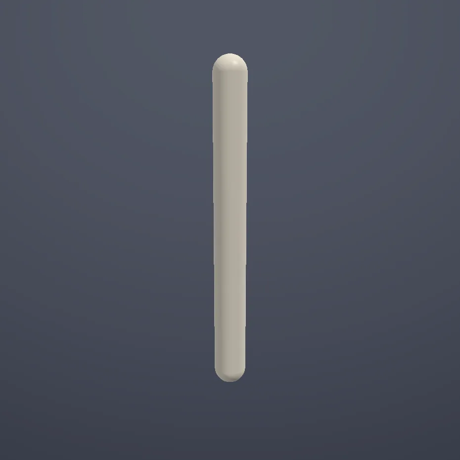
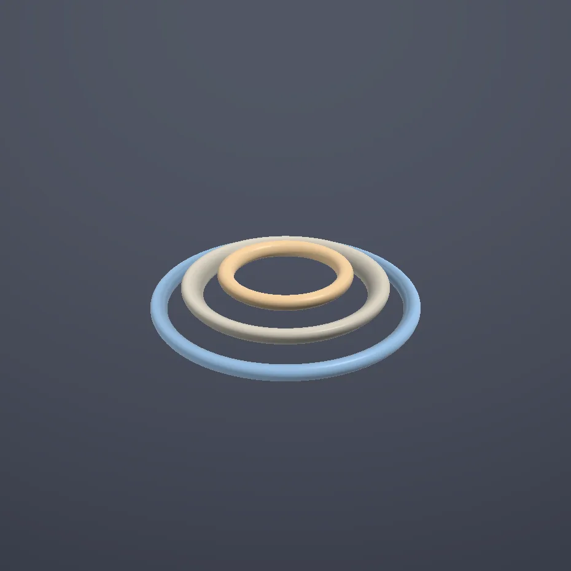
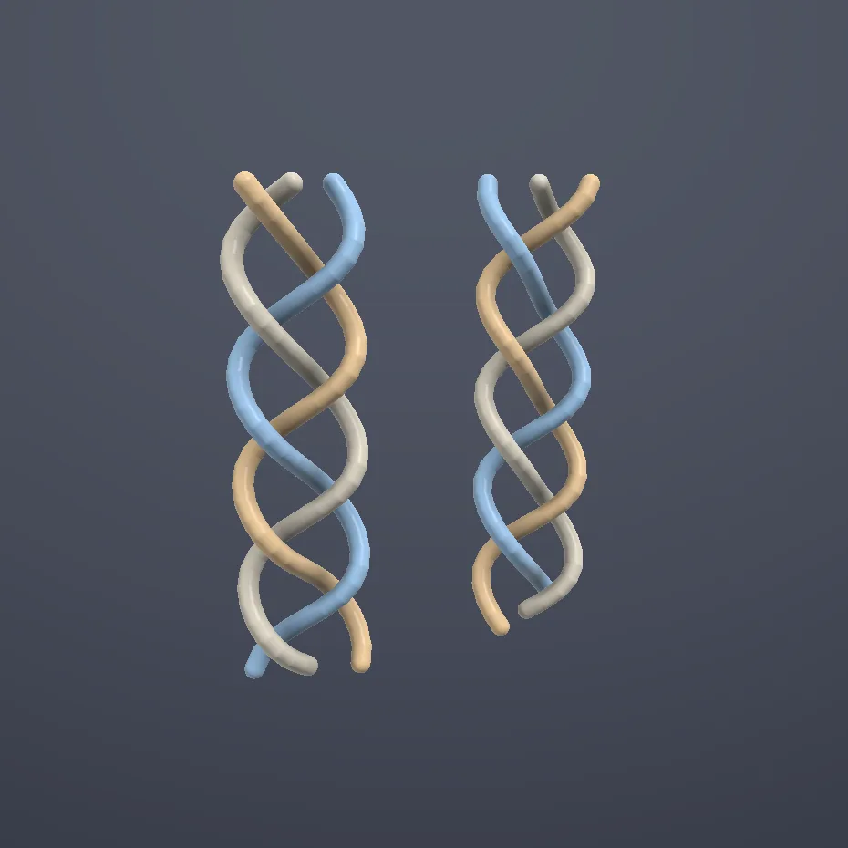
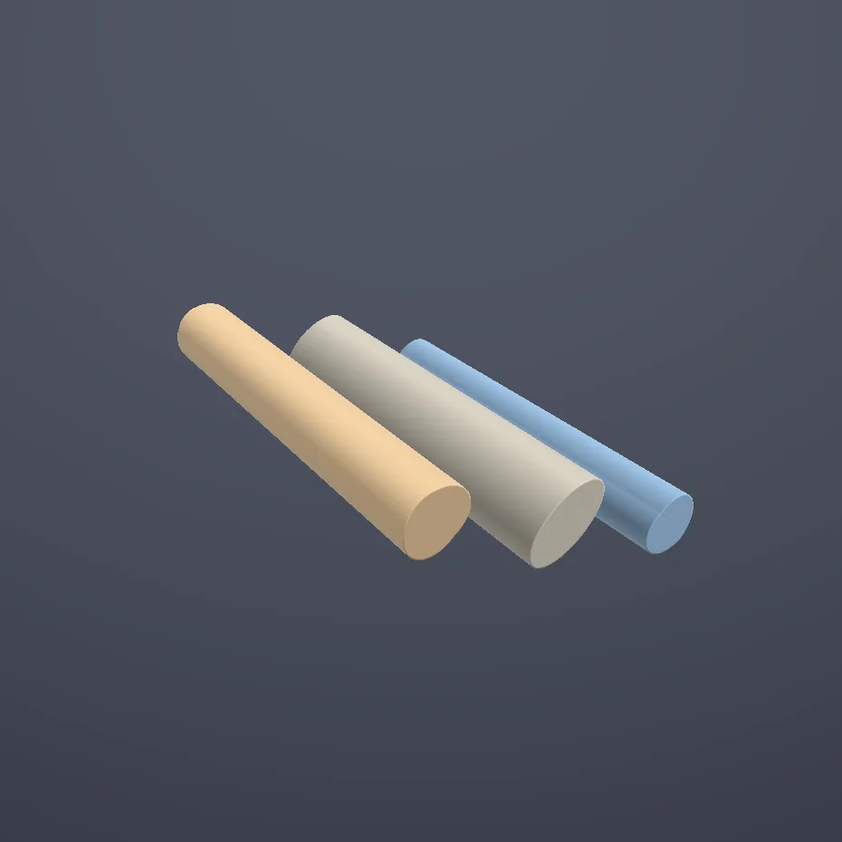
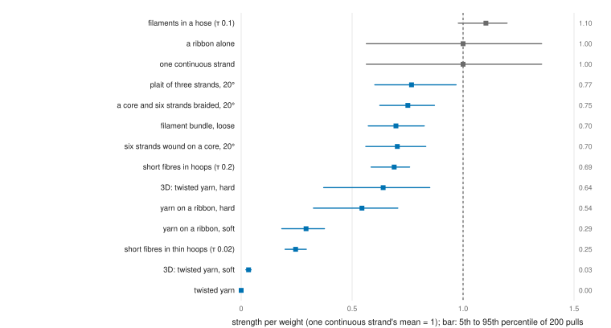

Rope after the knot: what holds in four dimensions
Draft 2, 2026-11-15. Not submitted, not audited. The status box at the end lists what is still owed.
Abstract
It is well known that a knotted loop comes undone in four dimensions, and it is often taken to follow that a four-dimensional world could have no rope, no knots and no cloth. We show that this overstates the loss. What four dimensions removes is narrow: one thread can no longer catch on another. Each thing a rope does in our world (holding twist, gripping its own fibres, braiding, being made fast) fails for thread against thread and returns when one of the two parts is a surface. We build each case as geometry in a solid-modelling kernel written for four dimensions, test twist in a bead-chain simulation run identically in three dimensions and in four, and price the resulting ropes per weight in one tensile model. A twisted yarn of threads has no strength in four dimensions. The rope that works is ordinary: continuous filaments in a thin closed hose, 1.13 times a single strand per weight where a loose bundle is 0.70, and the only construction that beats a strand under every setting of the model's chosen numbers. The topology is known and is cited; the mechanics and the comparison are the contribution.
1. Introduction
Two things in four dimensions can obstruct each other only if their dimensions add to at least three (general position; F1). A thread is one-dimensional, so two threads add to two and pass through where each other would be. A thread and a surface add to three and catch. So a ring falls off a ring and stays on a sphere, and chains, cloth and bearings have been drawn and simulated on that basis before (G1, G2, G3).
Cordage in our world is thread against thread at every scale. Twist holds short fibres in a yarn because each is wound round the others and pressed on them by its own tension (B5, G4, G5). A knot holds because a strand cannot pass through a strand. A braid is strands that cannot pass. All three are the same fact, and all three go in four dimensions. The usual conclusion is that rope goes with them.
This paper asks the engineering question instead: what is the least change that brings each function back, and what is the resulting rope worth? The answer in every case is one surface. The paper's order is: methods (section 2); twist, fastening and braiding (section 3); strength per weight (section 4); validation and sensitivity (section 5).
 cross-section at w = 0
cross-section at w = 0 cross-section at w = 0.9
cross-section at w = 0.9 side view at z = 0 (w up)
side view at z = 0 (w up) side view at z = 0.35
side view at z = 0.35
cross-section at w = 0 cross-section at w = 0.5
cross-section at w = 0.5
side view at z = 0 (w up)
side view at z = 0.32. Methods
Three instruments, each with its own test file, and one rule for reporting: a number appears in this paper only if a script writes it to a data file and a ledger test finds it there.
2.1 Geometric tests in the CAD⁴ kernel
CAD⁴ is a solid-modelling kernel for four dimensions, written for this work. A part is a tree of operations that compiles to a distance function. Two parts interfere if a sampled grid finds a point inside both (12 to 18 samples an axis over the overlap of their bounding boxes, with cells proved empty by the distance bound skipped). "A cannot be moved off B" means: translate A rigidly along each of the four axes, both ways, in steps finer than the thinnest wall, and it interferes before it is clear. "A comes free" means a stated path is swept with no interference at any step.
This tests rigid translations along axes, and named paths. It can show that a way out exists. It cannot prove that none does. Where we say a link or knot holds, that rests on a cited theorem, and the kernel shows only that the obvious ways out are shut. Constructions made by revolving a three-dimensional curve (hose braids, the tube knot, the tube yarn) are the spun surface of that curve (E8).
2.2 Bead-chain simulation of twisted yarn
Fibres are chains of 33 beads on springs (stiffness 3000) with a repelling contact (stiffness 6000) between beads of different fibres nearer than two radii (radius 0.1; length 4). Seven fibres, six round one, are laid as helices of a given number of turns, the ends clamped, the yarn stretched 3%, every free bead displaced at random by 0.002, and the system relaxed by damped dynamics (step 0.006, damping 0.985 a step) for 30 000 steps. The same code runs with three coordinates or with four; the only difference is one more direction for a bead to move in.
Measured at rest: the turns one outer fibre still makes round the core; the elastic energy; the contact force on the core and on one outer fibre, per length; that fibre's tension. Variants: the core replaced by a rigid ribbon of a given half-width; thirteen fibres inside a wall that no bead's centre may pass (a hose).
There is no friction and no bending stiffness, so a twisted state can be held only by geometry, which is the question. Each case is one bundle size. Relaxation finds a rest state, not necessarily the lowest.
2.3 Tensile model
 (a) The model
(a) The model (b) One pull of four ropes: force at the jaw against stretch
(b) One pull of four ropes: force at the jaw against stretchA rope is 96 sections long. Each fibre's place is a track of unit links: one continuous filament, or short fibres 40 links long laid end to end from a random phase. Links share one stiffness and each has its own strength, Weibull with modulus 5 (A2). Neighbouring tracks are joined at each section by a frictional interface, elastic (stiffness a quarter of a link's) until its shear reaches 0.3 times the press between them, then slipping at that force. Both ends are in jaws. This is the chain-of-bundles picture with frictional load transfer (A1–A7).
The rope is stretched in 110 steps to 4.5% (7% for braids). At each step the equilibrium is the minimum of a convex energy (with the friction limits fixed for the step, a stick-then-slip interface has a potential), found by Newton's method with a banded Cholesky solve and a line search. Then any link over its strength is removed, worst first, and the equilibrium is found again. A solve counts only if its final step is under 10⁻⁹ of the stretch; runs that fail are reported and excluded.
Each rope is pulled 200 times (60 or 40 in the sweeps, as each figure says) with different random strengths and phases. We report the mean, the spread and the 5th percentile. Strength is in strands: one continuous strand's mean at this length is 1. Weight is in strands, counting every sheath, hose, jacket and the extra length of a strand laid at an angle.
What differs between ropes is who touches whom, and the press:
| rope | who touches whom | the press between neighbours |
|---|---|---|
| loose bundle | 13: one and the twelve round it (D4) | none |
| twisted yarn | 7: one and six | q × (their mean tension + a laying tension), q measured in 2.2 |
| yarn on a ribbon | six fibres, each touching only the ribbon | the same law, q measured with a ribbon core |
| hoops | 13 | constant: a third of the skin's force on a fibre |
| hose | 13, and a fourteenth track, the hose, touching the outer twelve and carrying load | fibre to fibre a third of the skin's force; hose to fibre all of it |
| braid, maypole | 3, or a core and 6; a strand at θ has stiffness cos³θ, strength cosθ, weight 1/cosθ | tan²θ × tension (B5, C2) |
| cable | 13 elements with the level below's measured strength distribution, stiffness and weight | as hoops |
The skin's force on a fibre comes from treating a hose τ thick as a thin pressure vessel (D1) stressed to half its strength. Three numbers are chosen, not measured: that half (called HOOP), the laying tension (5% of a link's strength) and friction. Section 5 says what was done about them.
2.4 Sheath pressure: three estimates
(a) The vessel formula. (b) A net of springs on an icosphere of up to 10 242 nodes, shrunk onto twelve rigid balls in their packed places and relaxed with the nodes kept outside the balls; the force on each ball is read against the net's mean tension. The same method on a band round six discs must give exactly one tension per disc, and does. (c) The same force from the convex hull's area and mean curvature (Steiner's formula; D3) and the virial of a closed film. Separately, how that force is shared: thirteen balls with one-sided linear contacts and diameters drawn at random, 200 packings a setting (D5).
3. Results: twist, fastening and braiding
3.1 Twist
 (a) Two turns given: turns still wound as the yarn relaxes
(a) Two turns given: turns still wound as the yarn relaxes (b) Turns kept at rest against turns given
(b) Turns kept at rest against turns givenThread yarn. In three dimensions the turns stay and the fibres press on the core. In four every whole turn leaves through the spare direction, the pressure goes to zero and the energy returns to the untwisted value (4.7 in both). A half turn stays in both worlds: it cannot be undone with the ends clamped. With no jiggle the 4D twist stands, so it is an equilibrium, and an unstable one. A twisted yarn of short threads therefore has no strength in four dimensions: on the bench it reads 0.00 strands.
Ribbon core. A ribbon core holds the twist if the ribbon is wide enough that a fibre cannot slip round its edge: the threshold lies between half-widths of 0.1 and 0.2, one to two fibre radii. A hose core should hold it at any width, because a hose has no edge; that is shown here only for ribbons wound on a hose (section 3.3).
Tube fibres. Revolve an ordinary twisted yarn and each fibre becomes a tube. Tubes cannot pass one another, and in the kernel an outer tube cannot be pushed off the yarn in any direction. Fibre that is tubular can be spun. This is geometry only; the bead yarn has no tubes.
Bundle in a hose. A hose round the bundle seems to save one turn, and only one. Thirteen fibres pressed together by a tight hose were given 0 to 4 turns, with three random seeds. Untwisted they rest at an energy near 56. Given an odd number of turns they never came to rest below 77. Given an even number they came down to 52 to 56 in six runs of nine and jammed higher in the other three, as high as 80. So odd and even overlap, and what separates them is the floor under the odd runs, not a clean gap. With no hose the same thirteen shed everything (8.8 whatever they are given). The reading we offer: a bundle that is held together turns as a body, and the rotations of its three-dimensional cross-section have a single stubborn loop (the belt trick; F6), where ours has a two-dimensional cross-section whose rotations wind without limit: ℤ against ℤ/2. That reading predicts the floor. It does not explain the jams. We report it as a suggestion.
3.2 Fastening
Knots in thread. A thread cannot be knotted (F1, F2). We show it directly: one strand of a trefoil is lifted into the spare direction, carried through the place where the other strand is, and set down, with nothing touching; the crossing has changed and the trefoil is a plain loop. Pushed through without the lift, the strands collide.
Knots in tubes. A tube can be knotted. The same trefoil revolved is the spun torus of the knot, and its complement has the trefoil's group (E5, E8). In the kernel the strand that passed freely as a thread is stopped.
Hitches. A hitch is a sphere. The lost knot is often taken to mean nothing can be made fast. But what a hitch does is hold a line to a post, and a sphere round a post cannot be pulled off sideways, for the reason a sphere-hoop holds a bundle and a ring does not (figure 1). A ring through a sphere is a shackle. So the cost of the lost knot is narrower than it sounds: joining two thread ropes end to end, and stoppers, need hardware or tube rope.
Borromean links. They exist in one mixture. Two spheres and a ring (F3): with both spheres the ring is stopped every way, and either sphere taken away frees it. Three rings cannot do it.
3.3 Braids and cloth
 cross-section at w = 0
cross-section at w = 0
cross-section at w = 0.5
side view at z = 0 (w up) side view at z = 0.7
side view at z = 0.7 cross-section at w = 0
cross-section at w = 0
cross-section at w = 0.5 side view at z = 0 (w up)
side view at z = 0 (w up) side view at z = 0.3
side view at z = 0.3Threads and ribbons. Threads do not braid, and neither do flat ribbons. A ribbon has edges, and in the kernel one ribbon of a plait slides along its own width past the others and lifts away untouched.
Hoses. Hoses braid. Draw any braid in a half-space and revolve it: every strand is a hose and every crossing is one hose passing through another. The mathematics is the loop braid group, into which the ordinary braid group embeds (E1, E6). A plait of three hoses is held in all four directions.
Braid on a core. The core must be a hose too. Six hoses braided round a hose (a maypole) hold each other and the pole. Round a thread core a ring of hoses leaves the core free along the ring's axis, the same failure as a ring round a bundle. Ribbons on a hose. Each is held to the hose and not to one another: a served core, where the over-and-under adds friction only.
Cloth. Cloth is threads woven with ribbons, or sheets with sheets, which is published (G3).
4. Results: strength per weight

| rope | per weight | note |
|---|---|---|
| twisted yarn of short threads, 4D | 0.00 | sheds its twist |
| the same in 3D, hard twist | 0.64 | for comparison |
| yarn on a ribbon, hard twist | 0.54 | the ribbon alone is 1.00 |
| thirteen filaments, loose | 0.70 | spread 11%, against a strand's 24% |
| filaments in hoops (best thickness) | 0.86 | 0.79 to 0.95 across the chosen numbers |
| short fibres in hoops | 0.70 | |
| filaments in a hose (best thickness) | 1.13 | 1.06 to 1.22 across the chosen numbers |
| short fibres in a hose | 1.06 | |
| a hose that contracts more than its fibres | 1.15 to 1.25 | Poisson difference 0.2, and 1 |
| seven hoses, loose | 0.73 | spread 15% |
| maypole: a hose core and six braided, 20° | 0.76 | spread 11% |
| plait of three hoses | 0.77 | |
| ribbons on a hose | 0.71 | given no grip on each other |
| rope, cable, great cable (thirteen of each) | 0.84, 0.73, 0.63 | hooped at each level |
- Hose. Filaments in a hose a tenth to a fifth of a fibre's radius thick are the only construction that beats a single strand per weight. The hose grips and carries load. As pulled 200 times at a tenth, the same rope reads 1.10 with a spread of 6%; what it can be counted on for, the 5th percentile, is 0.98 per weight against a strand's 0.56. Most of what a rope buys is reliability.
- Hoops. Hoops alone never reach a strand's worth. They grip and carry nothing.
- Braids. Braiding buys reliability and nothing else. A maypole is 0.76 against 0.73 for the same hoses loose; the spread falls by a quarter. The angle that grips is also the angle that costs.
- Cabling. Each level costs about an eighth. A rope is already uniform and partly hollow, so a jacket round thirteen of them is heavy for what it adds, and with no twist there is no torque for cabling to balance. In four dimensions a cable is for handling; for strength, make one fat rope.
- Contracting hose. A hose that tightens as it is pulled is the best rope and only a little better, unless it is built to contract. A material that is the same in every direction cannot have a Poisson ratio above a third in four dimensions.
5. Validation and sensitivity
Sensitivity to the chosen parameters. Each rope was re-pulled with HOOP, the laying tension and friction each halved and doubled, and re-tuned to its best thickness or angle each time. The order holds: filaments in a hose stay above a strand and hoops below at every setting. Yarn on a ribbon moves so much that it can be ordered and not quoted (supplement B5).
Sheath pressure. A taut skin lies on the outer fibres and runs straight between them. The net of springs and the hull calculation agree to three figures, and give 0.81 of the vessel formula's value. The same method gives the exact answer in three dimensions. The skin's tightest hundredth carries 2.3 times its mean tension, so a hose stressed to half its strength on average is at its limit in places.
Load sharing between contacts. An outer fibre shares the skin's force among five contacts, a third each when the fibres are equal. An earlier version of the bench applied the whole force at every contact, which overstated fibre-to-fibre grip threefold; correcting it took the hose from 1.20 to 1.13 and hoops from 0.99 to 0.86, and both sets of numbers are in the repository. With fibre diameters drawn at random the total grip on an outer fibre barely moves and the grip on the middle fibre scatters widely: such a rope would have a loosely held heart.
Grip law. Against the bead yarn, tension times curvature is within 20% below 20° (worst ratio 0.81) and understates by a factor of 1.4 above.
Combined. Under every version of the sheath pressure the hose rope reads 1.06–1.11 per weight.
Not modelled. Bending; fibre migration; a hose's bending stiffness; creep of a shrink fit; any difference between a tube and a thread beyond which braids exist. The tube yarn, the tube knot and the hitch are geometry and cited theorems; none has been through a mechanical rig.
6. Discussion
The lesson is not that four dimensions is hospitable to rope. It is that the textbook fact was the wrong size. "A knot unties" is a statement about one curve. A rope is a made thing with parts of several shapes, and only the parts that are curves lose their hold on one another. Give the bundle a skin and it is a rope; give the fibre a bore and it can be spun and knotted; give the post a sphere and the line is fast. The most useful rope turns out to be the least exotic one.
Two things are particular to four dimensions and may be worth more than the comparison. First, a sheath is a better bargain there: a sphere's skin pulls two ways. Second, if the one-turn result survives a better rig, it is the cleanest statement we know of why our world can spin yarn and that one cannot.
Contribution and prior work. Not the topology: the rule, the chains, sheet weaving, the loop braid group, the spun torus and the Borromean link are published and cited. Ours, as far as a prior-art pass could tell: the controlled three-against-four twist experiment with its ribbon and hose variants; the kernel constructions and tests; the species comparison on one bench with its weight accounting and sensitivity; the taut-skin correction to the vessel formula; and the reframing. One forum (G6) could not be read and may hold some of it.
Contributions, data and code
Computation, code, analysis and drafting: Claude (Anthropic), working in sessions directed by the PI. Direction, judgement and the reframing in the title: minor mobius. No independent audit has been done. Where a venue does not accept an AI author, this statement and the PI's byline stand in.
Everything is in one repository, minormobius/agent01, under kata/: the kernel and parts (cad4/), the bead yarn (twist/), the bench and its studies (pull/), and this paper with its figure scripts and ledger (papers/r1/). Each number above is recomputed from a baked data file by papers/r1/test/ledger.selftest.mjs. The instruments run in a browser at kata.mino.mobi/cad4, /twist and /pull.
References
Only what the text cites. In brackets: how far the citation, and then the claim we lean on, was checked. The full list with what each is used for is supplement C.
- A1. H. E. Daniels (1945), "The statistical theory of the strength of bundles of threads. I", Proc. R. Soc. Lond. A 183(995), 405–435. doi:10.1098/rspa.1945.0011 [confirmed; content: not re-read]
- A2. W. Weibull (1951), "A Statistical Distribution Function of Wide Applicability", J. Appl. Mech. 18(3), 293–297. doi:10.1115/1.4010337 [confirmed; content: not re-read]
- A3. B. D. Coleman (1958), "On the strength of classical fibres and fibre bundles", J. Mech. Phys. Solids 7(1), 60–70. doi:10.1016/0022-5096(58)90039-5 [confirmed; content: not re-read]
- A4. B. W. Rosen (1964), "Tensile failure of fibrous composites", AIAA J. 2(11), 1985–1991. doi:10.2514/3.2699 [confirmed; content: not re-read]
- A5. D. G. Harlow, S. L. Phoenix (1978), "The Chain-of-Bundles Probability Model for the Strength of Fibrous Materials I: Analysis and Conjectures", J. Compos. Mater. 12(2), 195–214, doi:10.1177/002199837801200207; "II: A Numerical Study of Convergence", 12(3), 314–334, doi:10.1177/002199837801200308 [confirmed; content: not re-read]
- A6. H. L. Cox (1952), "The elasticity and strength of paper and other fibrous materials", Br. J. Appl. Phys. 3(3), 72–79. doi:10.1088/0508-3443/3/3/302 [confirmed; content: not re-read]
- A7. A. Kelly, W. R. Tyson (1965), "Tensile properties of fibre-reinforced metals: Copper/tungsten and copper/molybdenum", J. Mech. Phys. Solids 13(6), 329–350. doi:10.1016/0022-5096(65)90035-9 [confirmed; content: formula from memory]
- B5. G. A. Costello, Theory of Wire Rope, Springer, 1990; 2nd ed. 1997. doi:10.1007/978-1-4612-1970-5 [confirmed; content: checked in a thesis reproducing the framework, not in the book]
- C2. J. T. Evans, A. G. Gibson (2002), "Composite angle ply laminates and netting analysis", Proc. R. Soc. A 458(2028), 3079–3088. doi:10.1098/rspa.2002.1066 [confirmed; content: not re-read]
- D1. S. Timoshenko, S. Woinowsky-Krieger, Theory of Plates and Shells, 2nd ed., McGraw-Hill, 1959 [confirmed (catalogues); content: location in the book from memory]
- D3. R. Schneider, Convex Bodies: The Brunn–Minkowski Theory, Cambridge University Press, 1993 (doi:10.1017/CBO9780511526282); 2nd expanded ed. 2014 [confirmed; content: section not located]
- D4. K. Schütte, B. L. van der Waerden, "Das Problem der dreizehn Kugeln", Math. Ann. 125(1), 325–334. doi:10.1007/BF01343127 (dated 1952 in the publisher's record; usually cited as 1953) [confirmed; content: —]
- D5. J.-N. Roux (2000), "Geometric origin of mechanical properties of granular materials", Phys. Rev. E 61(6), 6802–6836, doi:10.1103/PhysRevE.61.6802; C. F. Moukarzel (1998), "Isostatic Phase Transition and Instability in Stiff Granular Materials", Phys. Rev. Lett. 81(8), 1634–1637, doi:10.1103/PhysRevLett.81.1634 [confirmed; content: abstracts read]
- E1. C. Damiani (2017), "A journey through loop braid groups", Expo. Math. 35(3), 252–285. doi:10.1016/j.exmath.2016.12.003; arXiv:1605.02323 [confirmed; content: read (arXiv text)]
- E5. S. Satoh (2000), "Virtual knot presentation of ribbon torus-knots", J. Knot Theory Ramifications 9(4), 531–542. doi:10.1142/S0218216500000293 [confirmed; content: —]
- E6. P. Bellingeri, A. Bodin (2016), "The braid group of a necklace", Math. Z. 283(3–4), 995–1010. doi:10.1007/s00209-016-1630-0; arXiv:1404.2511 [confirmed; content: read (arXiv text)]
- E8. B. Winter (2009), "The classification of spun torus knots", J. Knot Theory Ramifications 18(9), 1287–1298. doi:10.1142/S0218216509007476; arXiv:0711.1638 [confirmed; content: read]
- F1. A. Skopenkov, "Embedding and knotting of manifolds in Euclidean spaces", arXiv:math/0604045 (published in Surveys in Contemporary Mathematics, LMS Lecture Note Ser. 347, 2008, 248–342: recalled, not checked) [arXiv confirmed; content: read]
- F2. E. C. Zeeman (1960), "Unknotting spheres", Ann. of Math. 72, 350–360, doi:10.2307/1970138; A. Haefliger (1961), "Plongements différentiables de variétés dans variétés", Comment. Math. Helv. 36, 47–82, doi:10.1007/BF02566892 [confirmed; content: not read]
- F3. B. Davis, H. Howards, J. Newman, J. Parsley (2011), "An infinite family of convex Brunnian links in Rⁿ", Geom. Dedicata 155, 141–149, doi:10.1007/s10711-011-9581-4, arXiv:1101.4863 [confirmed; content: read]
- F6. E. D. Bolker (1973), "The spinor spanner", Amer. Math. Monthly 80(9), 977–984, doi:10.1080/00029890.1973.11993429; M. Staley (2010), "Understanding quaternions and the Dirac belt trick", Eur. J. Phys. 31, 467–478, doi:10.1088/0143-0807/31/3/004 [confirmed; content: not read]
- G1. Hqak (wxyhly), "4D Space (X): Knots and Links", 2019, wxyhly-en.github.io/archives/knot4d [page seen; content: page read by the prior-art pass]
- G2. Hqak (wxyhly), "4D World (VI): Newtonian Mechanics", 2020, wxyhly-en.github.io/archives/newton4 [page seen; content: page read by the prior-art pass]
- G3. Hqak (wxyhly), 2016, wxyhly-en.github.io/archives/lavie4ds [page seen; content: page read by the prior-art pass]
- G4. A. Seguin, J. Crassous (2022), Phys. Rev. Lett. 128, 078002 [record only; content: not read]
- G5. P. B. Warren, R. C. Ball, R. E. Goldstein (2018), Phys. Rev. Lett. 120, 158001 [record only; content: not read]
- G6. hi.gher.space forum threads "4d weaving" (2010) and "N-Dimensional Knots" [could not be fetched; content: unread]
Supplement
- A. Rope drawings. Twelve ropes, four panels each, every panel live on a click: figures.html.
- B. Methods and results by chart. Fourteen charts, each with its method and result: results.html.
- C. References with verification status: REFERENCES.md. D. Prior art: PRIOR-ART.md. E. The design space and the corrections made along the way: CONFIGURATIONS.md.
Open items
- No independent audit. No page checks of the references marked partial; several were confirmed bibliographically and not read.
- The one-turn result (3.1) needs a relaxation that escapes jams, more seeds and other packings, and a literature search of its own, before it is a result.
- The tube yarn needs a rig with tubes.
- A study of bundle size (a hose's weight share against fibre count) is not done.
- The rope drawings are on a dark ground and need a print version.
- The forum source G6 is unread.